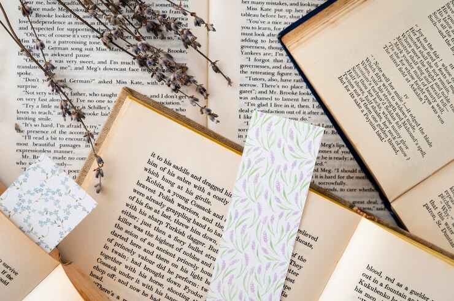

Eu gosto de ler… Qualquer tipo de livro, mas confesso ter uma grande fascinação por fantasia, porém, comédia romântica sempre terá meu coração. É como viver uma vida diferente a cada vez que passo meus olhos pelas palavras e não posso negar que isso é incrível. A sensação de vazio quando termina um livro muito bom, no entanto, pode não ser muito agradável, mas no mesmo momento em que começo outro que capta a minha atenção e faz eu me apegar a toda a história e personagens, percebo que isso é o que eu realmente gosto de fazer.
Abrir uma encomenda de livros que você esperou por muito tempo chegar, arrumar sua estante categoricamente com os gêneros, fazer seus próprios marca páginas… As coisas mais simples e genuínas possíveis já são capazes de encher os corações e guardar uma felicidade imensa dentro de si. Por isso eu digo com firmeza, ler é capaz de curar almas, mudar vidas e transformar pessoas.
